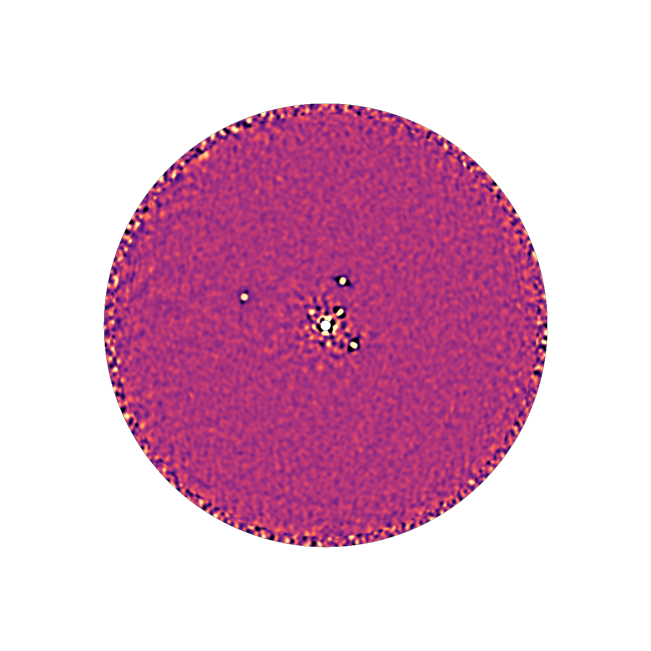

Extracting Traditional Photometry and Astrometry
Though not its primary purpose, you can use Octofitter to extract traditional astrometry and photometry from one or more images. This uses the functionality in the Fit Orbits to Images tutorial, but with a much simpler model.
Instead of fitting an entire orbit, we will simply fit an X / Y position and brightness.
Start by loading your images:
using Octofitter
using OctofitterImages
using Distributions
using AstroImages
using CairoMakie
using Statistics
using Pigeons
# Load individual iamges
# image1 = load("image1.fits")
# image2 = load("image2.fits")
# Or slices from a cube:
# cube = load("cube1.fits")
# image1 = cube[:,:,1]
# Download sample images from GitHub
download(
"https://zenodo.org/records/6823071/files/HR8799.2021.fits?download=1",
"HR8799-2021.fits"
)
# Or multi-extension FITS (this example)
image = AstroImages.load("HR8799-2021.fits")
You can preview the image using imview from AstroImages:
imview(image)
Note that to accurately extract astrometry and photometry, the input image should have already been convolved with the star or planet point spread function. If this isn't available, a convolution by a Gaussian or Airy disk might be an acceptable approximation.
Build the model
We start with the bodies. The star A is the point the image is centred on, and b is the source we are measuring. b carries its own brightness in the band the image was taken in — here we call the band H, and so the variable is flux_H:
const OBS_EPOCH = mjd("2021")
A = Body(
name="A",
variables=@variables begin
mass = 1.5 # M⊙; the value is irrelevant to a fixed-position fit
end
)
b = Body(
name="b",
about=A,
variables=@variables begin
# Source brightness in image units -- could be contrast, mags, Jy, or
# arb. as long as it's consistent with the units of the data you provide
flux_H ~ Uniform(0, 1)
# The 2D position we actually want to measure
sep ~ Uniform(0, 2000) # mas
pa ~ Uniform(0, 2pi) # radians, east of north
# A face-on circular orbit, placed at position angle `pa` at the epoch
# of the image. See the note below.
a = sep / system.plx # AU: a face-on circle of this radius
e = 0.0 # subtends `sep` mas at distance 1/plx
i = 0.0
ω = 0.0
Ω = 0.0
θ = pa
epoch = $OBS_EPOCH
end
)There are no orbit types — which parametrization you are using is decided by which variables you declare — so a fixed position is written as the degenerate orbit above: face-on (i = 0), circular (e = 0), with a radius chosen so that it subtends sep milliarcseconds, and phased so that its position angle equals pa at the epoch of the image.
At the single epoch of this image, that is exactly a fixed position: the body sits at (sep, pa) by construction. It is only a fixed position at that one epoch, so if you add a second image at a different date, either give each source its own body or move to a real orbit model.
Now the observation. One ImageObs holds every source modelled in the image, names the point the image is centred on (ref), and says which band's flux to read:
imglike = ImageObs(
Table(
image=[AstroImages.recenter(image)],
platescale=[9.971],
epoch=[OBS_EPOCH]
),
targets = (b,),
ref = A,
band = :H,
name = "images",
variables=@variables begin
# The following are optional parameters for marginalizing over instrument systematics:
# Platescale uncertainty multiplier [could use: platescale ~ truncated(Normal(1, 0.01), lower=0)]
platescale = 1.0
# North angle offset in radians [could use: northangle ~ Normal(0, deg2rad(1))]
northangle = 0.0
end
)
sys = System(
name="sys",
bodies=[A, b],
observations=[imglike],
variables=@variables begin
plx = 24.4620
end
)
model = Octofitter.LogDensityModel(sys, verbosity=4)LogDensityModel for System sys of dimension 3 and 1 epochs with fields .ℓπcallback and .∇ℓπcallback
Note that you can also supply a contrast curve or map directly, via a contrast or contrastmap column. If not provided, a simple contrast curve will be calculated directly from the data. A contrast entry is a callable mapping separation in pixels to the 1σ flux uncertainty there; OctofitterImages.contrast_interp(img) builds one from an image.
To measure a second source in the same image, add a second body with its own sep, pa and flux_H, and list it in targets: targets=(b, c). This is one likelihood covering both sources, not two added together.
Sample from the model (locally)
If you already know where the planet is and you only want to extract astrometry from that known location, you can specify a starting point and use hamiltonian monte carlo as follows. This will be very very fast.
using Random
Random.seed!(1) # the manual is built in one process; seed so this page is reproducible
initialize!(model, (;
bodies=(;
b=(;
sep=1704,
pa=deg2rad(70.63),
flux_H=1e-4, # order of magnitude only; a starting point, not a constraint
)
)
))
chain = octofit(model, iterations=10000)Chains MCMC chain (10000×28×1 Array{Float64, 3}):
Iterations = 1:1:10000
Number of chains = 1
Samples per chain = 10000
Wall duration = 0.51 seconds
Compute duration = 0.51 seconds
parameters = plx, A_mass, b_flux_H, b_sep, b_pa, b_a, b_e, b_i, b_ω, b_Ω, b_θ, b_epoch, images_platescale, images_northangle
internals = n_steps, is_accept, acceptance_rate, hamiltonian_energy, hamiltonian_energy_error, max_hamiltonian_energy_error, tree_depth, numerical_error, step_size, nom_step_size, is_adapt, loglike, logprior, logpost, tree_depth, numerical_error
Use `describe(chains)` for summary statistics and quantiles.
Leaving one variable out is not free: initialize! then has to find it, and it screens the guess against the priors first. flux_H ~ Uniform(0, 1) is four orders of magnitude wider than the source actually is, so a starting flux near the truth sits far out in that prior's tail — which is enough for initialize! to skip its global search and report the guess back unchanged. Naming all three keeps the fit on the path this section is describing.
Note the nesting: guesses for body variables go under bodies=, matching the shape of the model.
Sample from the model (globally)
You could also try sampling across the entire image, without necessarily specifying a starting position. Note that if there are multiple candidates, taking the naive mean and standard deviation will average across all planets.
initialize!(model)
chain_global, pt = octofit_pigeons(model, n_rounds=11)(chain = MCMC chain (2048×18×1 Array{Float64, 3}), pt = PT(checkpoint = false, ...))A blind search over a whole image is strongly multi-modal, and a single HMC chain will settle into whichever candidate initialize! happened to find. That is why the targeted fit above uses octofit — it is seeded on a known source — while the blind search below uses octofit_pigeons, which explores the competing candidates properly.
Access results
samples_sep = chain[:b_sep]
samples_pa = chain[:b_pa]
println("The median separation is ", median(samples_sep))
flux = chain[:b_flux_H]
println("The flux is ", mean(flux), " ± ", std(flux))
println("The \"SNR\" is ", mean(flux)/std(flux))The median separation is 1704.0
The flux is 0.0001 ± 1.355320483325282e-20
The "SNR" is 7.378328685378515e15The flux is a body variable, so it is named b_flux_H in the chain.
Visualize
using CairoMakie, PairPlots
octocorner(model,chain)